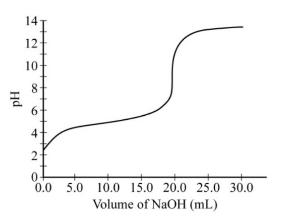

Data collected during the titration of a 20.0 mL sample of a 0.10 \(M\) solution of a monoprotic acid with a solution of NaOH of unknown concentration are plotted in the graph above. Based on the data, which of the following are the approximate p\(K_a\) of the acid and the molar concentration of the NaOH?
$$ \begin{array}{c|c|c} & \text{p}K_a & [\ce{NaOH}] \\ \hline \text{A} & 4.7 & 0.050 M \\ \text{B} & 4.7 & 0.10 M \\ \text{C} & 9.3 & 0.050 M \\ \text{D} & 9.3 & 0.10 M \\ \end{array} $$